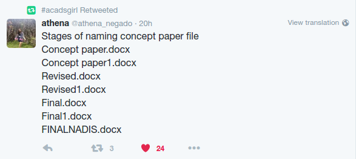

Git Gud or Git Rekt
An Introduction to Git
Sean Francis N. Ballais
http://www.seanballais.com
A Few Notes
- Feel free to interrupt me for questions and clarifications
- Slides available at https://seanballais.com/assets/slides/GitGud.pdf
- Source code available at https://github.com/seanballais/git-gud-lecture-presentation
- High-level overview discussion
- You can reach me through @seanballais, sean@seanballais.com, or MashedPotato (Steam)
Who am I?
Programmer
5+ years
PSHS '15

VCS
- Stands for Version Control System
- Manages changes of your source code
- "Time machine"
Git
- An open source distributed version control system
- Built using C
- Created by Linus Torvalds in 2005
A Short History of Git
Why Use Git
(and VCS, in general)
Collaboration
Versioning
No hidden strings
Who Uses Git

Microsoft
Apple

Linux


FOSS
Seriously?
and a whole lot more!
Play Time with Git
Setting Up Git
- Run the installer or use
apt-get -
Once installed, open Command Prompt or Terminal and execute:
$ git config --global user.name "your name"
$ git config --global user.email "your@email.com" - Time to set up a GitHub account
GitHub

Web-based Git repository hosting service

Has collaboration features
FREE!
(for public repositories)
A Git Demo
Git Workflow
Working Directory
Staging
Local repo
Online repo
Branching

- Used to develop features or experiment isolated from each other.
- Branches is a clone of its origin branch.
- Master is the default branch.

Git Branch commands
$ git checkout -b branch_name # Create a new branch
$ git checkout branch_name # Switch current branch to branch_name
$ git merge branch_name # Merge current branch with branch_name
$ git branch -d branch_name # Delete branch_name from the local repo
$ git push :origin branch_name # Delete branch_name from the online repo
Some Git tricks
-
Tagging commits
$ git tag tag_name commit_id -
Resetting your working directory
$ git reset -
Checking logs
$ git log
Now, your turn
- Decide on what app you all will create
- Assign each group with one functionality of the app
- Don't forget to create a repo online with Git
- Push code to the repo online with Git
- Lastly, do well in your exams especially in Math and CS.